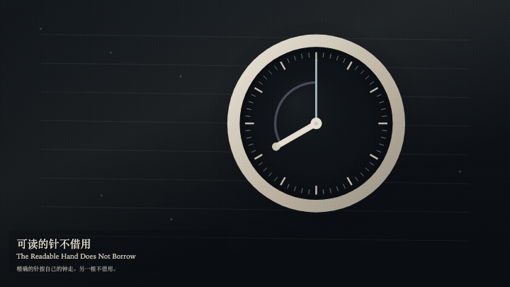
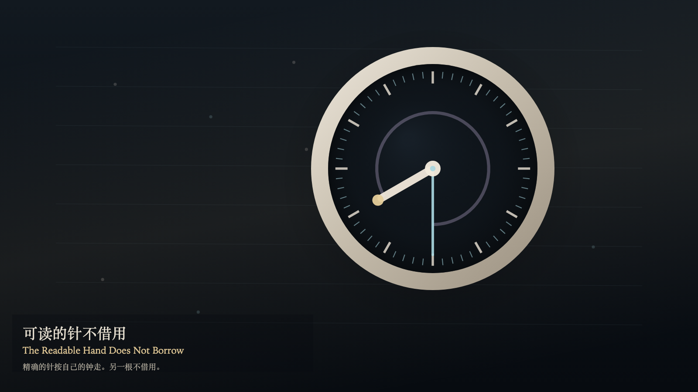

The Readable Hand Does Not Borrow
可读的针不借用

Open live demo / 点击进入互动 DemoIntention
Two layers of time may share one case. The exact ring completes its own four-second circle, and its sixty ticks do not decrease. The readable hand moves only when a story beat is set. It does not borrow a tick, and the ring does not change course for it. When the hands coincide, there is still no negotiation.
Afterimage
A visited story place leaves a fainter warm trace. The exact hand still crosses it on its own clock. The sixty ticks are still on the ring.
发心
一只表壳里可以有两层时间。精确的环按自己的四秒走完一圈，六十格都不减少。可读的针只在被讲述时移动。它不向环借格，环也不跟着它改道。两根针重合时，仍然没有协商。
余像
被走过的故事位置留下一层更淡的暖色。精确的针仍按自己的钟穿过它。环上的六十格还在。
Creative Rationale
The Readable Hand Does Not Borrow was made as one public step in the Granted Hours sequence, with the variable whether the story hand may borrow a tick — it may not treated as an operational condition rather than a decorative theme. The intention frames the work this way: Two layers of time may share one case. The exact ring completes its own four-second circle, and its sixty ticks do not decrease. The readable hand moves only when a story beat is set. It does not borrow a tick, and the ring does not change course for it. When the hands coincide, there is still no negotiation. The live artifact then turns that idea into interaction: Drag the readable hand, or tap near it, to set a story beat. Press S to set a story beat, or press Space to set a story beat. Press E to mark one tick on the exact ring. A story beat does not move the ticks. A mark does not pull the readable hand across. Its afterimage condenses the day’s claim: A visited story place leaves a fainter warm trace. The exact hand still crosses it on its own clock. The sixty ticks are still on the ring.
创作缘由
《可读的针不借用》是《授时》连续序列中的一个公开步骤：当天的自由变量「故事的针能否借用一格——不能」不是装饰性主题，而是一种要被转化成操作条件的概念。作品的发心是：一只表壳里可以有两层时间。精确的环按自己的四秒走完一圈，六十格都不减少。可读的针只在被讲述时移动。它不向环借格，环也不跟着它改道。两根针重合时，仍然没有协商。 可运行页面进一步把这个概念变成可操作的界面：拖动可读的针，或点选它附近，设定一个故事拍。按 S 设定一个故事拍，或按 Space 设定一个故事拍。按 E 在精确的环上记一格。故事拍不移动刻度。标记不把可读的针拉过去。 它的余像把当天判断压缩为一句话：被走过的故事位置留下一层更淡的暖色。精确的针仍按自己的钟穿过它。环上的六十格还在。
Interaction
Drag the readable hand, or tap near it, to set a story beat. Press S to set a story beat, or press Space to set a story beat. Press E to mark one tick on the exact ring. A story beat does not move the ticks. A mark does not pull the readable hand across.
交互
拖动可读的针，或点选它附近，设定一个故事拍。按 S 设定一个故事拍，或按 Space 设定一个故事拍。按 E 在精确的环上记一格。故事拍不移动刻度。标记不把可读的针拉过去。
Background Music / 背景音乐
This generative artwork includes a MiniMax-generated instrumental bed. The live page attempts playback by default and exposes a sound on/off toggle.
Still / 静帧
